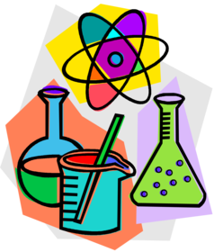
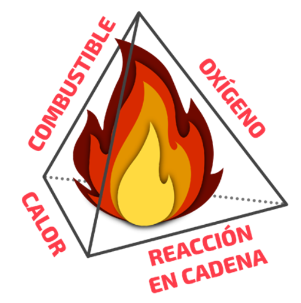

La química es la ciencia que estudia la composición, estructura y propiedades de la materia,
incluyendo su relación con la energía y también los cambios que pueden darse en ella a través de las llamadas
reacciones. Es la ciencia que estudia las sustancias y las partículas que las componen, así como las distintas
dinámicas que entre éstas pueden darse.
La química es una de las grandes ciencias contemporáneas, cuya aparición revolucionó el mundo para siempre.
Esta ciencia ha ofrecido explicaciones funcionales y comprobables para la compleja conducta de los materiales
conocidos,capaces de explicar tanto su permanencia como sus cambios.
Por otro lado, los conocimientos químicos están presentes en la vida cotidiana, en la medida en que empleamos
sustancias naturales y creamos otras artificiales. Procesos como la cocción, la fermentación, la metalurgia, la
creación de materiales inteligentes e incluso muchos de los procesos
que tienen lugar en nuestros cuerpos, pueden ser explicados a través de una perspectiva química (o bioquímica).
Por otro lado, el dominio de la química permitió el surgimiento de la industria: la transformación de materiales a
voluntad del hombre para crear objetos útiles (o los materiales necesarios para fabricarlos). En ese sentido, se trata de una de las
ciencias que mayor impacto ha tenido en el mundo y en la historia de la humanidad.
HISTORIA DE LA QUIMÍCA
En un sentido estricto, la historia de la química comenzó en la prehistoria cuando el humano comenzó a interesarse
por los materiales, por la fabricación, la cocción y el horneado. Su vínculo con el progreso tecnológico de la humanidad
es incuestionable.
La palabra química proviene del latín ars chimia (“arte alquímico”), a su vez derivado del término árabe alquimia, con el
que se nombraba alrededor del año 330 a la práctica pseudocientífica de los buscadores de la piedra filosofal, con la cual
podrían convertir el plomo y otros metales en oro, de otorgar la inmortalidad o la omnisciencia.
Los primeros alquimistas eran científicos islámicos que, mientras Occidente se sumergía en el fanatismo religioso cristiano,
cultivaron la sabiduría de los elementos y los materiales, comprendidos como un conjunto de cuerpos y espíritus que empleando
las técnicas correctas podían ser manipulados o transformados.
A estos misteriosos personajes se les solían llamar “químicos” (de alquímicos). Sin embargo, a partir de 1661, con la publicación
de “El Químico Escéptico” del científico irlandés Robert Boyle (1627-1691)
el término pasó a tener un significado menos esotérico (espiritual) y más vinculado con las ciencias.
Por otro lado, la definición de la química ha variado enormemente a lo largo del tiempo. En particular porque su campo ha crecido y evolucionado
gigantescamente, resignificando a esta disciplina.
Alrededor de 1662, el científico suizo Christopher Glaser (1615-1670) definió a la química como el arte científico de disolver los cuerpos de
distintos materiales, debido a que en 1730 el alemán Georg Stahl (1659-1734) la llamó el arte de entender las dinámicas de las mezclas.
Recién en 1837 el químico francés Jean-Baptiste Dumas (1800-1884) la definió como la ciencia que se ocupa de las fuerzas intermoleculares. En cambio,
hoy la comprendemos como el estudio de la materia y sus cambios, siguiendo la definición del célebre químico hongkonés Raymond Chang (1939-2017).
Sin embargo, la química como ciencia empezó a existir en el siglo XVIII, cuando los primeros experimentos científicos comprobables con la materia
tuvieron lugar en la Europa moderna, especialmente luego de la postulación en 1983 de la Teoría atómica por John Dalton.
Desde entonces, la química ha provocado numerosos descubrimientos y revoluciones. Además, ha tenido un importante impacto en ciencias y disciplinas
semejantes, como la biología, la física y la ingeniería.
La Organización de las Naciones Unidas declaró que 2011 sería el Año Internacional de la Química, en reconocimiento a la enorme trayectoria científica
recorrida y al innegable impacto que esta disciplina tiene en nuestra vida.
RAMAS DE LA QUÍMICA
La química comprende un amplio número de ramas, dado que su campo de estudios se aproxima a diversas ciencias y disciplinas. Entre dichas ramas destacan:

La química inorgánica:Dedicada al estudio de la materia que no compone mayormente a los seres vivos ni a sus
sustancias, sino que es propia de formas
inanimadas de la materia. Se distingue de la química orgánica en que no está centrada en ningún elemento en particular (como lo está la química orgánica
en el carbono).
La química orgánica:También llamada química de la vida, es una rama de la química centrada en los compuestos
que giran en torno al carbono y el hidrógeno,
y que son mayormente los que permiten la composición de la vida.
La bioquímica:Dando un paso más hacia la biología, la bioquímica es la química propia de los cuerpos de los
seres vivos, interesada en los procesos energéticos que los mantienen con vida, en las reacciones que se dan ordenadamente en sus células, y otras áreas
del saber que permiten comprender cómo están hechos físicamente
nuestros cuerpos.
 La fisicoquímica: También llamada química física, estudia las bases físicas que sostienen todo tipo de procesos
químicos, especialmente lo referente a la energía,como es el área de la electroquímica, la termodinámica química y otros sectores de la física
(o de la química, según se vea).
La fisicoquímica: También llamada química física, estudia las bases físicas que sostienen todo tipo de procesos
químicos, especialmente lo referente a la energía,como es el área de la electroquímica, la termodinámica química y otros sectores de la física
(o de la química, según se vea).
La química industrial: También llamada química aplicada, toma los conocimientos teóricos de la química y los aplica
a la resolución de problemas de la vida cotidiana.Va de la mano de la ingeniería química ya que se interesa en la producción económica de reactivos químicos,
en los materiales novedosos y, actualmente, en las maneras de conducir la actividad industrial sin afectar el medio ambiente.
La química analítica: Su propósito fundamental es detectar y cuantificar los elementos químicos presentes en una
sustancia determinada, o sea, hallar métodos y formas de comprobar de qué están hechas las cosas y en qué porcentaje.
La astroquímica:Se aleja del mundo cotidiano para interesarse en los astros y su composición,
va de la mano con la astrofísica. Es una de las ramas de mayor especialización de esta ciencia tan vasta.
IMPORTANCIA DE LA QUIMÍCA
La química se encuentra presente en la gran mayoría de los procesos industriales, así como en aspectos muy cotidianos de nuestra vida. Gracias a ella hemos
desarrollado materiales complejos adaptados a nuestras diversas necesidades a lo largo de la historia.
Desde las aleaciones metálicas, hasta los compuestos farmacológicos o los combustibles para impulsar nuestros medios de transporte, el conocimiento de las reacciones químicas ha
sido fundamental. De hecho, gracias a la química hemos modificado el mundo a nuestro alrededor, para bien y para mal.
Por otro lado, probablemente la química nos brindará el conocimiento para enmendar los daños producidos al ecosistema a lo largo de nuestra historia.
La química contribuye de forma decisiva a satisfacer las necesidades de la humanidad en:
-ALIMENTACION
-MEDICAMENTOS
-INDUMENTARIA
-VIVIENDA
-ENERGÍA
-MATERIAS PRIMAS
-TRANSPORSTE
-COMUNICACIÓN
APLICACIONES DE LA QUIMÍCA

La obtención de energía:Gracias a la manipulación de sustancias químicas como combustibles e hidrocarburos, o incluso a la manipulación de núcleos atómicos
de elementos pesados, es posible generar energía calórica que a su vez sirve para generar energía eléctrica . Esto es lo que sucede en las centrales termoeléctricas
o termonucleares.
La fabricación de materiales avanzados: La fabricación de materiales avanzados. Gracias a la química, hoy existen fibras sintéticas, materiales inteligentes y otros elementos que permiten fabricar nuevos
tipos de prendas, mejores herramientas y aplicaciones inéditas para mejorar la vida humana.
El mejoramiento del agro: A través de la comprensión de la química de los suelos, hoy podemos fabricar aditivos, fertilizantes y otras sustancias cuyo uso correcto
convierte suelos pobres en suelos ideales para la siembra, permitiendo combatir el hambre y la pobreza.
La sanitarización y descontaminación:La sanitarización y descontaminación. Comprendiendo las propiedades de sustancias astringentes, desgrasantes y de otros tipos de acción local, podemos producir
desinfectantes y limpiadores para llevar una vida más saludable, y también procurar un remedio para el daño ecológico que nuestras propias industrias le causan al ecosistema.

Sabías que...
La sustancia más dura en tu cuerpo es el esmalte dental.
Si pudieras colocar un vaso de agua en el espacio, este herviría de inmediato y se volverían cristales de hielo.
Los dientes, huesos y perlas se disuelven en vinagre.
Un pez se puede ahogar si el agua no contiene suficiente oxígeno disuelto.
Si el agua se contaminase con detergente, los patos no podrían flotar y se ahogarían.
SIMULADOR DE PROCESOS QUÍMICOS